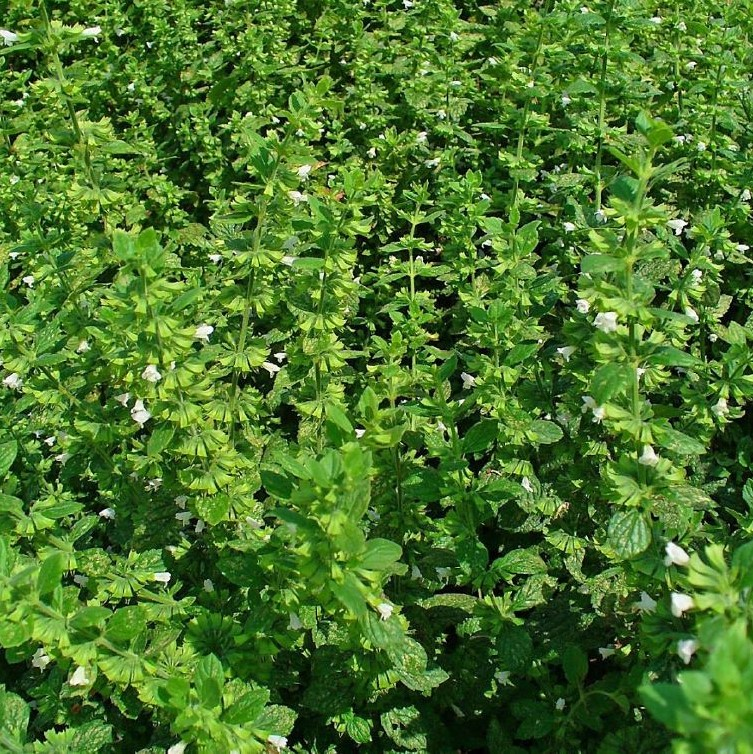
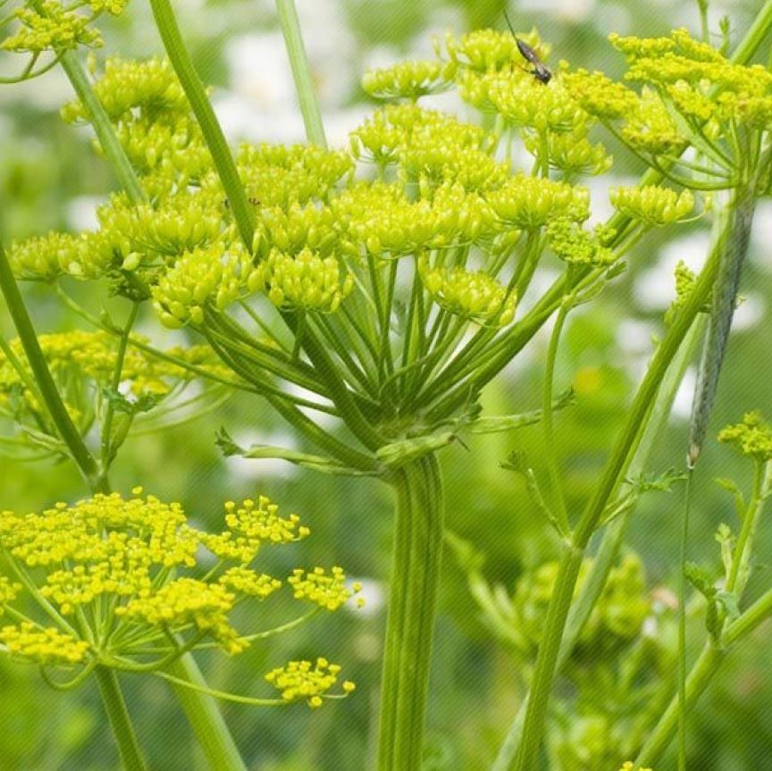
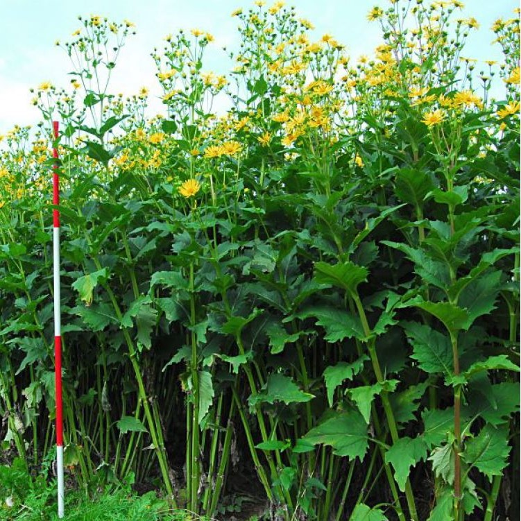
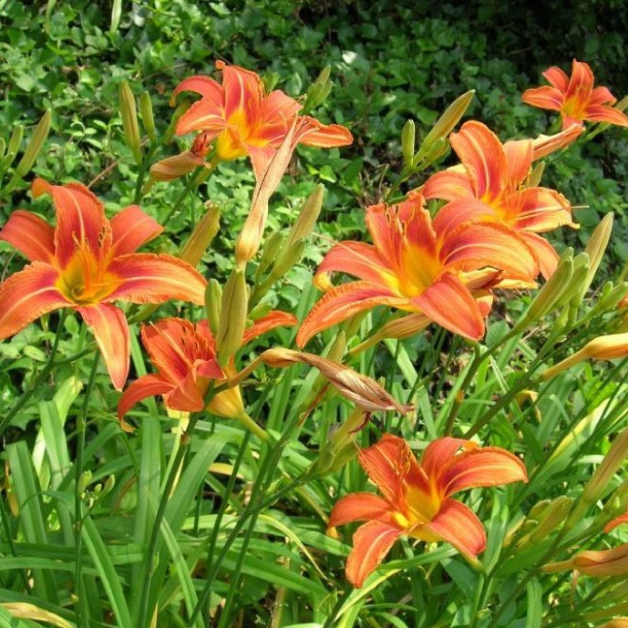
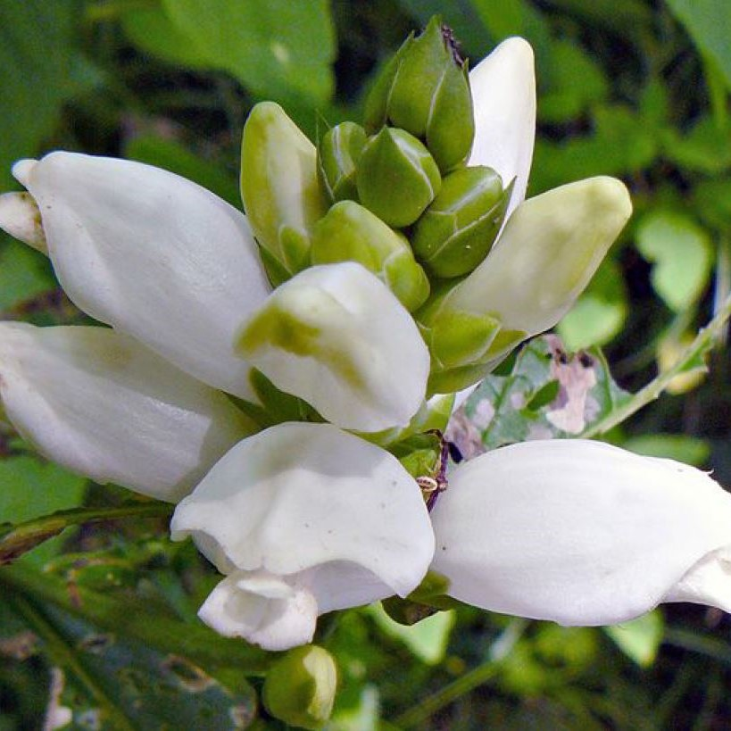

Section C

Mélisse
Comestibilité : Feuille ✔
Période de floraison : Juin - Octobre
Le nom « Mélisse » vient d'un mot grec qui signifie « abeille » (chose que les femmes nommées
« Mélissa » ignorent très souvent). C'est probablement parce que les fleurs de cette plante font
le régal des abeilles. Ça n'a aucun rapport avec le goût des feuilles qui est plutôt délicieusement
citronné. Elles s'ajoutent aux salades, de légumes comme de fruits, et aux plats cuisinés. C'est
une merveille en accompagnement du poisson. Mon herboriste préférée recommande fortement d'en
boire en tisane au quotidien. C'est un calmant du système nerveux qui nous aide à lâcher prise.
À boire le soir en regardant les mauvaises herbes dans le jardin !

Livèche
Comestibilité : Feuille, fleur, graine, racine ✔
Période de floraison : Juillet - Août
La livèche est aussi appelée céleri perpétuel car elle en a le goût, mais à la puissance 10 !
On utilise principalement le feuillage dans les soupes et les potages, les plats mijotés, les
ragoûts. On peut également blanchir les jeunes tiges pour les utiliser comme le céleri. Les
grands fans du goût du céleri utilisent les feuilles crues en salade. Cette plante imposante,
lorsqu’elle fleurit, peut atteindre 1,8 m et ses fleurs jaunes en ombelles attirent
particulièrement nos amies les guêpes parasitoïdes. Pour avoir des repousses de feuillage
tendre, on peut la couper au ras du sol lorsqu’elle s’apprête à fleurir. On utilisera bien sûr
ce feuillage comme paillis.

Silphium perforé
Comestibilité : Aucune ❌
Période de floraison : Août - Septembre
Le silphium est un GÉANT. Il ressemble à un tournesol, mais vivace. Comme ce dernier, il
fleurit à la fin de l’été, malheureusement sans produire de graines comestibles pour l’humain.
Ce sont plutôt les oiseaux qui en raffolent. Fait encore plus étonnant, les oiseaux et les
insectes s’abreuvent de l’eau qui s’accumule à l’aisselle des feuilles qui embrassent la
tige. Finalement, ses fleurs attirent les insectes pollinisateurs et les papillons.

Lupin indigo
Comestibilité : Aucune ❌
Période de floraison : Juillet - Août
Plante fixatrice d'azote très ornementale avec ses très longs épis de fleurs bleutées.
Sa hauteur peut en faire la vedette d'une section de votre aménagement. Elle ressemble
beaucoup au lupin qu'on voit souvent dans les jardins (qui est du genre Lupinus et non pas
Baptisia...), sans attirer les pucerons comme ce dernier. Une bonne raison de l'y préférer !

Consoude de Russie Bocking 4
Comestibilité : Aucune ❌
Période de floraison : Mai - Juin
La consoude de Russie, c’est peut-être LA plante de la permaculture, et elle n’est même
pas comestible ! On la cultive pour plusieurs autres raisons, notamment pour produire son
propre paillis. Elle est parfaite pour ce rôle, notamment parce qu’elle pousse très
rapidement. On peut la tailler au ras du sol plusieurs fois dans l’été. Elle est un
couvre-sol extrêmement efficace par la densité de son feuillage. Finalement, elle a les
mêmes propriétés médicinales que la consoude officinale, très cicatrisante et pour les
maux de la peau, sans le côté terriblement envahissant.

Hémérocalle
Comestibilité : Bouton floral, fleur, tubercule ⚠
Mise en garde : Les personnes qui ne sont pas accoutumées à consommer l’hémérocalle peuvent
subir ses effets laxatifs : faire des tests progressifs à petite quantité
Période de floraison : Juillet - Août
Voilà vraiment un légume vivace qui ne demande pas d’entretien. Bien que les fleurs soient sucrées et très
élégantes dans la salade, c’est plutôt les boutons floraux qui retiennent notre attention. Bien croquants,
ils s’ajoutent dans un sauté. On peut également les sécher s’ils sont cueillis alors qu’ils sont encore bien
fermés. Attention! Les personnes qui ne sont pas accoutumées à consommer l’hémérocalle peuvent subir ses
effets laxatifs. Allez-y à petite dose, on vous parle par expérience ! Les jeunes tubercules sont
comestibles et auraient une saveur de noisette. Nous n’y avons pas goûté.

Galane glabre
Comestibilité : Aucune ❌
Période de floraison : Juillet - Août - Septembre
Non-comestible, on l’apprécie pour sa production de nectar très tard en saison qui
nourrit les papillons, les bourdons et même les colibris.